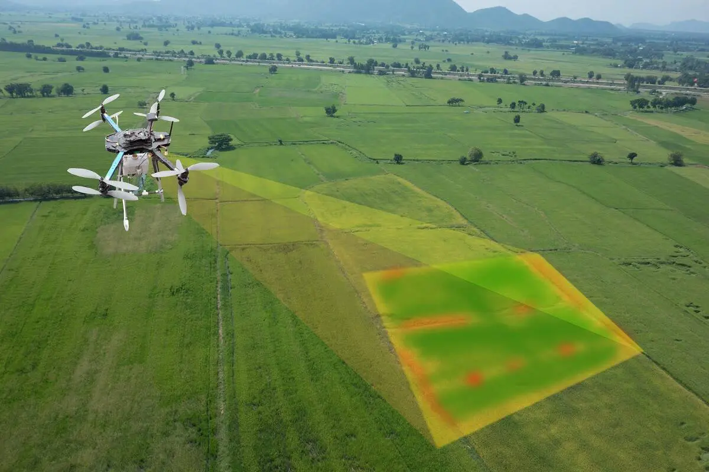

O que é o agrinho?

O Programa Agrinho é um conjunto de ações de Educação e de Promoção Social, destinado a todos aqueles que atuam na educação e comunidade em geral. Criado em 1995 no Estado do Paraná, o Programa Agrinho surgiu da necessidade de orientar trabalhadores rurais quanto ao uso adequado de defensivos agrícolas.
Agricultura de precisão
A migração do campo para a cidade não é novidade. Mas quando se trata de campo, uma revolução está em andamento atualmente, a agricultura de precisão. Com a ajuda de GPS, sensores e drones, este tipo de agricultura pode trazer muitos benefícios, mesmo para as pequenas cidades como Ponta Grossa.
Agricultura de precisão permite que os agricultores façam melhores decisões com relação a problemas no solo, clima e bem-estar das plantas. Por exemplo, drones podem voar e identificar áreas que precisam de mais água e nutrientes, evitando o excesso e desperdício. E também a agricultura de precisão traz a criação de novos empregos e novos empreendimentos. Nas fazendas, as pessoas precisam trabalhar com esse tipo de maquinário. Já na cidade, estão surgindo novas empresas que fabricam e vendem essa tecnologia, promovendo a inovação.
A agricultura de precisão também é ecologicamente correta, devido ao uso racional de recursos, é possível reduzir a quantidade de fertilizantes e pesticidas, conservar o solo e diminuir a quantidade de água que está sendo usada. A quantidade dos produtos agrícolas aumenta proporcionalmente, e os produtos podem ser comercializados de maneira atraente para o público, melhorando assim a renda dos agricultores.
